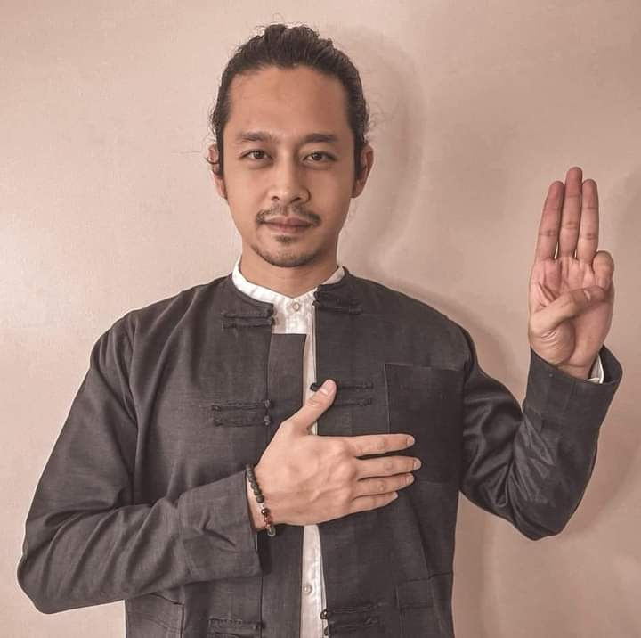

Daung
Political activities
Following the 2021 Myanmar coup d'état, he participated in the anti-coup movement both in person at rallies and through social media. Denouncing the military coup, he took part in protests, starting in February. He joined the "We Want Justice" three-finger salute movement. The movement was launched on social media, and many celebrities have joined the movement.
On 12 April 2021, warrants for his arrest were issued under Section 505 (a) of the penal code by the State Administration Council for speaking out against the military coup. Along with several other celebrities, he was charged with calling for participation in the Civil Disobedience Movement (CDM) and damaging the state's ability to govern, with supporting the Committee Representing Pyidaungsu Hluttaw, and with generally inciting the people to disturb the peace and stability of the nation.
|  |
 |
Leave a Comment